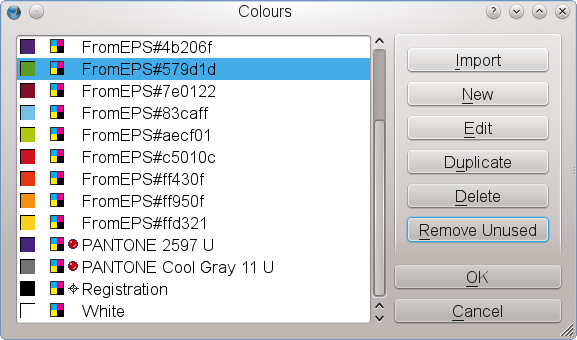

EPS (Encapsulated PostScript) is a subset of the page description language PostScript. While PostScript is used to describe the graphical elements of one or more pages in a device-independent manner, an EPS file contains PostScript elements for a single image, and, importantly, must include a so-called Bounding Box, a rectangular which is necessary to describe the dimensions of the image. Like PostScript, an EPS file can contain bitmap images (pixels), vector data and text. Also, most, if not all EPS files are not meant to be edited, since EPS, like PDF, is designed as an exchange format.
Perhaps the main reason to use EPS is its ubiquity in most professional print workflows. If in doubt, most graphics professionals will ask for or send you an EPS file, which is sometimes seen as the lowest common denominator for high-quality graphics files. Also, the EPS format is well-documented, and the specification is publicly available. When it comes to vector graphics, EPS (or a successor format like AI or PDF) is unsurpassed in terms of quality. While relatively unimportant with small graphics in a flier, it’s safe to say that for large output media like posters, EPS may be the only reliable choice for vector graphics if superior print quality is important. Finally, the EPS format provides some features that are important in professional printing, like font embedding or support for CMYK and spot colors.
There are two basic methods of importing EPS files, and both have pluses and minuses. For some files you can choose which method suits your needs best, while other files can only be imported one way.
One of the idiosyncracies of the EPS format that frequently causes confusion with inexperienced users is the EPS preview. The PostScript language had been designed to describe pages for a printing device, and at the time the format was introduced, computers weren’t capable of rendering the highly complex content of a PS file on screen. The same was, of course, true for EPS, and to provide users some visual indication of a file’s content, preview images were embedded in an EPS file. Unfortunately, there is no uniform standard for the format of the preview image, and the preview isn’t even required. As a result, applications on Macs used the Mac’s PICT format for previews, Windows applications Windows Metafiles, and UNIX programs ASCII-encoded bitmaps, which made the preview unworkable across platforms. For those who previously avoided using EPS files because of their lacking preview and/or poor support by programs like word processors, there is some good news: Scribus will always create a useable preview in its file dialogs, either based on the embedded preview, or, if the latter doesn’t work, by using Ghostscript to create a low-resolution PNG that displays the content of an EPS file. Likewise, no matter how you import an EPS, what you see in Scribus is always the orginal content, not a preview. Be aware, though, that a Scribus file dialog always indicates the color space and the resolution of the preview image, not the ones in the EPS itself. Also note that creating the preview for a large and complex EPS file in a file dialog may take some time to render:
|
This is usually the safest way to import an EPS. Provided Ghostscript is installed and properly configured, it works just like with any other bitmap image. However, since Scribus uses Ghostscript to rasterize the EPS, loading and rendering may take some time, depending on the complexity of the file.
Importing EPS like any other vector file via File > Import >Get Vector File, if possible, does have some advantages. Since you are working with vector data, file size and exported PDF size are relatively small. It makes the exported files resolution-independent, so they can be re-scaled without losing crispness in printing, independent of the size of the output medium.
One of the major advantages of EPS vector import is that some important publishing features will be preserved, for example CMYK and spot colors in EPS files. Scribus will add these to the color list of your document:
|  |
Likewise, if fonts are embedded in the EPS file, Scribus will use them, if installed on your system. You can then edit text in the imported drawing. If the embedded font is missing, you will be asked for a substitution:
 |
 |
| A special note for LaTeX users: If your LaTeX file uses bitmap fonts and you create an EPS or PostScript file from your LaTeX source, Ghostscript will create a bitmap for each glyph during import into Scribus, which may result in hundreds or even thousands of tiny bitmaps. If you really need to use a bitmap font, you should either consider using a Scribus Render Frame or loading the EPS/PS file into an image frame. |
 |
Some EPS files cannot be opened by Scribus at all, despite being 100% compliant to the specification. These files serve special purposes and may not have any image contents at all. For example, color palette files from commercial vendors are often shipped as EPS files, because these palettes can be read by most graphics programs, including Scribus. Their only content is a list of colors. Other examples are symbol or pattern libraries for Adobe Illustrator. The content of these files will be loaded into the respective resource dialogs in Illustrator, but it can’t be accessed directly by most other programs, including Scribus.